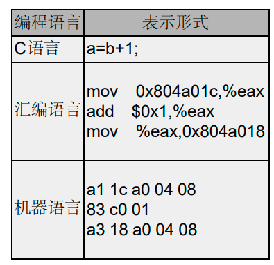
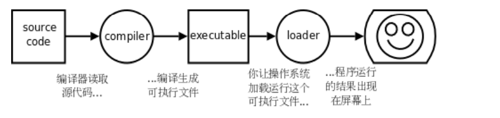
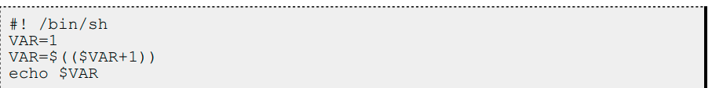
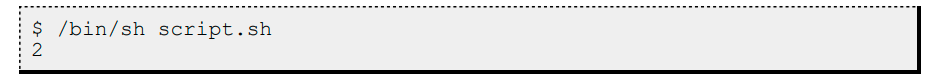
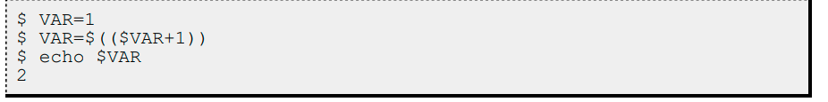
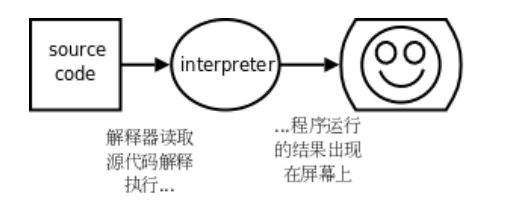

程序（Program） 告诉计算机应如何完成一个计算任务，这里的计算可以是数学运算，比如解方程，也可以是符号运算，比如查找和替换文档中的某个单词。从根本上说，计算机是由数字电路组成的运算机器，只能对数字做运算，程序之所以能做符号运算，是因为符号在计算机内部也是用数字表示的。此外，程序还可以处理声音和图像，声音和图像在计算机内部必然也是用数字表示的， 这些数字经过专门的硬件设备转换成人可以听到、看到的声音和图像。
程序由一系列指令（Instruction）组成，指令是指示计算机做某种运算的命令，通常包括以下几类：
输入（Input） 从键盘、文件或者其它设备获取数据。
输出（Output） 把数据显示到屏幕，或者存入一个文件，或者发送到其它设备。
基本运算 执行最基本的数学运算（加减乘除）和数据存取。
测试和分支 测试某个条件，然后根据不同的测试结果执行不同的后续指令。
循环 重复执行一系列操作。
对于程序来说，有上面这几类指令就足够了。你曾用过的任何一个程序，不管它有多么复杂，都是 由这几类指令组成的。程序是那么的复杂，而编写程序可以用的指令却只有这么简单的几种，这中 间巨大的落差就要由程序员去填了，所以编写程序理应是一件相当复杂的工作。编写程序可以说就是这样一个过程：把复杂的任务分解成子任务，把子任务再分解成更简单的任务，层层分解，直到最后简单得可以用以上指令来完成。
编程语言（Programming Language）分为低级语言（Low-level Language）和高级语言（Highlevel Language）。机器语言（Machine Language）和汇编语言（Assembly Language）属于低级语言，直接用计算机指令编写程序。而C、C++、Java、Python等属于高级语言，用语句 （Statement）编写程序，语句是计算机指令的抽象表示。举个例子，同样一个语句用C语言、汇编语言和机器语言分别表示如下： 
计算机只能对数字做运算，符号、声音、图像在计算机内部都要用数字表示，指令也不例外，上表中的机器语言完全由十六进制数字组成。最早的程序员都是直接用机器语言编程，但是很麻烦，需要查大量的表格来确定每个数字表示什么意思，编写出来的程序很不直观，而且容易出错，于是有了汇编语言，把机器语言中一组一组的数字用助记符（Mnemonic） 表示，直接用这些助记符写出汇编程序，然后让汇编器（Assembler） 去查表把助记符替换成数字，也就把汇编语言翻译成了机器语言。从上面的例子可以看出，汇编语言和机器语言的指令是一一对应的，汇编语言有三条指令，机器语言也有三条指令，汇编器就是做一个简单的替换工作，例如在第一条指令中，把mov ? ,%eax这种格式的指令替换成机器码a1 ?，?表示一个地址，在汇编指令中是0x804a01c，转换成机器码之后是1c a0 04 08（这是指令中的十六进制数的小端表示)
从上面的例子还可以看出，C语言的语句和低级语言的指令之间不是简单的一一对应关系，一条a=b+1;语句要翻译成三条汇编或机器指令，这个过程称为编译（Compile），由编译器 （Compiler）来完成，显然编译器的功能比汇编器要复杂得多。用C语言编写的程序必须经过编译转成机器指令才能被计算机执行，编译需要花一些时间，这是用高级语言编程的一个缺点，然而更多的是优点。首先，用C语言编程更容易，写出来的代码更紧凑，可读性更强，出了错也更容易改正。其次，C语言是可移植的（Portable）或者称为平台无关的（Platform Independent）。
平台这个词有很多种解释，可以指计算机体系结构（Architecture），也可以指操作系统（Operating System），也可以指开发平台（编译器、链接器等）。不同的计算机体系结构有不同的指令集（Instruction Set），可以识别的机器指令格式是不同的，直接用某种体系结构的汇编或机器指令写出来的程序只能在这种体系结构的计算机上运行，然而各种体系结构的计算机都有各自的C编译器，可以把C程序编译成各种不同体系结构的机器指令，这意味着用C语言写的程序只需稍加修改甚至不用修改就可以在各种不同的计算机上编译运行。各种高级语言都具有C语言的这些优点，所以绝大部分程序是用高级语言编写的，只有和硬件关系密切的少数程序（例如驱动程序）才会用到低级语言。还要注意一点，即使在相同的体系结构和操作系统下，用不同的C编译器（或者同一个C编译器的不同版本）编译同一个程序得到的结果也有可能不同，C语言有些语法特性在C标准中并没有明确规定，各编译器有不同的实现，编译出来的指令的行为特性也会不同，应该尽量避免使用不可移植的语法特性。
总结一下编译执行的过程，首先你用文本编辑器写一个C程序，然后保存成一个文件，例如program.c（通常C程序的文件名后缀是.c），这称为源代码（Source Code）或源文件，然后运行编译器对它进行编译，编译的过程并不执行程序，而是把源代码全部翻译成机器指令，再加上一些描述信息，生成一个新的文件，例如a.out，这称为可执行文件，可执行文件可以被操作系统加载运行，计算机执行该文件中由编译器生成的指令，如下图所示：

有些高级语言以解释（Interpret的方式执行，解释执行过程和C语言的编译执行过程很不一样。 例如编写一个Shell脚本script.sh，内容如下：

定义Shell变量VAR的初始值是1，然后自增1，然后打印VAR的值。用Shell程序/bin/sh解释执行这个 脚本，结果如下：

这里的/bin/sh称为解释器（Interpreter），它把脚本中的每一行当作一条命令解释执行，而不需要先生成包含机器指令的可执行文件再执行。 如果把脚本中的这三行当作三条命令直接敲到Shell提示符下，也能得到同样的结果：


编程语言仍在发展演化。以上介绍的机器语言称为第一代语言（1GL，1st Generation Programming Language），汇编语言称为第二代语言（2GL，2nd Generation Programming Language），C、C++、Java、Python等可以称为第三代语言（3GL，3rd Generation Programming Language）。目前已经有了4GL（4th Generation Programming Language）和5GL（5th Generation Programming Language）的概念。
3GL的编程语言虽然是用语句编程而不直接用指令编程，但语句也分为输入、输出、基本运算、测试分支和循环等几种，和指令有直接的对应关系。而4GL以后的编程语言更多是描述要做什么（Declarative）而不描述具体一步一步怎么做（Imperative），具体一步一步怎么做完全由编译器或解释器决定SQL语言 （SQL，Structured Query Language，结构化查询语言）就是这样的例子。
自然语言（Natural Language） 就是人类讲的语言，比如汉语、英语和法语。这类语言不是人为设计（虽然有人试图强加一些规则）而是自然进化的。形式语言（Formal Language） 是为了特定应用而人为设计的语言，例如数学家用的数字和运算符号。编程语言也是一种形式语言，是专门设计用来表达计算过程的形式语言。形式语言有严格的语法（Syntax）规则，例如，3+3=6是一个语法正确的数学等式，而3=+6$则不是。
语法规则是由符号（Token）和结构 （Structure）的规则所组成的 。
Token的概念相当于自然语言中的单词和标点、数学式中的数和运算符，例如3=+6$ 的问题之一在于$不是一个合法的数也不是一个事先定义好的运算符。结构是指Token的排列方式， 3=+6$ 还有一个结构上的错误，虽然加号和等号都是合法的运算符，但是不能在等号之后紧跟加号。关于Token的规则称为词法（Lexical）规则，而关于结构的规则称为语法（Grammar）规则。
当阅读一个自然语言的句子或者一种形式语言的语句时，你不仅要搞清楚每个词（Token）是什么意思，而且必须搞清楚整个句子的结构是什么样的（在自然语言中你只是没有意识到，但确实这样做了，尤其是在读外语时你肯定也意识到了）。这个分析句子结构的过程称为解析（Parse）。例如，当你听到“The other shoe fell.”这个句子时，你理解the other shoe是主语而fell是谓语动词，一 旦解析完成，你就搞懂了句子的意思，如果知道shoe是什么东西，fall意味着什么，这句话是在什么上下文（Context） 中说的，你还能理解这个句子主要暗示的内容，这些都属于语义 （Semantic） 的范畴。
虽然形式语言和自然语言有很多共同之处，包括Token、结构和语义，但是也有很多不一样的地方。
歧义性（Ambiguity）
自然语言充满歧义，人们通过上下文的线索和自己的常识来解决这个问题。形式语言的设计要求是清晰的、毫无歧义的，这意味着每个语句都必须有确切的含义而不管上下文如何。
冗余性（Redundancy）
为了消除歧义减少误解，自然语言引入了相当多的冗余。结果是自然语言经常说得啰里啰 嗦，而形式语言则更加紧凑，极少有冗余。
与字面意思的一致性
自然语言充斥着成语和隐喻（Metaphor），我在某种场合下说“The other shoe fell”，可能并不是说谁的鞋掉了。而形式语言中字面（Literal）意思基本上就是真实意思，也会有一些例外，例如C语言转义序列，但即使有例外也会明确规定哪些字面意思不是真实意思，它们所表示的真实意思又是什么。
说自然语言长大的人（实际上没有人例外），往往有一个适应形式语言的困难过程。某种意义上， 形式语言和自然语言之间的不同正像诗歌和说明文的区别，当然，前者之间的区别比后者更明显：
诗歌
词语的发音和意思一样重要，全诗作为一个整体创造出一种效果或者表达一种感情。歧义和非字面意思不仅是常见的而且是刻意使用的。
说明文
词语的字面意思显得更重要，并且结构能传达更多的信息。诗歌只能看一个整体，而说明文更适合逐字句分析，但仍然充满歧义。
程序
计算机程序是毫无歧义的，字面和本意高度一致，能够完全通过对Token和结构的分析加以理解。 现在给出一些关于阅读程序（包括其它形式语言）的建议。首先请记住形式语言远比自然语言紧凑，所以要多花点时间来读。其次，结构很重要，从上到下从左到右读往往不是一个好办法，而应该学会在大脑里解析：识别Token，分解结构。最后，请记住细节的影响，诸如拼写错误和标点错误这些在自然语言中可以忽略的小毛病会把形式语言搞得面目全非。
很不幸，Syntax和Grammar通常都翻译成“语法”，这让初学者非常混乱，Syntax的含义其实包含了Lexical和Grammar的规则，还包含一部分语义的规则，例如在C程序中变量应先声明后使用。 即使在英文的文献中Syntax和Grammar也常混用，在有些文献中Syntax的含义不包括Lexical规则，只要注意上下文就不会误解。另外，本书在翻译容易引起混淆的时候通常直接用英文名称，例 如Token没有十分好的翻译，直接用英文名称。
编程是一件复杂的工作，因为是人做的事情，所以难免经常出错。据说有这样一个典故：早期的计算机体积都很大，有一次一台计算机不能正常工作，工程师们找了半天原因最后发现是一只臭虫钻进计算机中造成的。从此以后，程序中的错误被叫做臭虫（Bug），而找到这些Bug并加以纠正的 过程就叫做调试（Debug）。有时候调试是一件非常复杂的工作，要求程序员概念明确、逻辑清晰、性格沉稳，还需要一点运气。调试的技能我们在后续的学习中慢慢培养，但首先我们要区分清楚程序中的Bug分为哪几类。
编译时错误
编译器只能翻译语法正确的程序，否则将导致编译失败，无法生成可执行文件。对于自然语言来说，一点语法错误不是很严重的问题，因为我们仍然可以读懂句子。而编译器就没那么宽容了，只要有哪怕一个很小的语法错误，编译器就会输出一条错误提示信息然后罢工，你就得不到你想要的结果。虽然大部分情况下编译器给出的错误提示信息就是你出错的代码行，但也有个别时候编译器给出的错误提示信息帮助不大，甚至会误导你。在开始学习编程的前几个星期，你可能会花大量的时间来纠正语法错误。等到有了一些经验之后，还是会犯这样的错误，不过会少得多，而且你能更快地发现错误原因。等到经验更丰富之后你就会觉得，语法错误是最简单最低级的错误，编译器的错误提示也就那么几种，即使错误提示是有误导的也能够立刻找出真正的错误原因是什么。相比下面两种错误，语法错误解决起来要容易得多。
运行时错误
编译器检查不出这类错误，仍然可以生成可执行文件，但在运行时会出错而导致程序崩溃。 对于我们接下来的几章将编写的简单程序来说，运行时错误很少见，到了后面的章节你会遇 到越来越多的运行时错误。读者在以后的学习中要时刻注意区分编译时和运行时（Runtime） 这两个概念，不仅在调试时需要区分这两个概念，在学习C语言的很多语法时都需要区分这两个概念，有些事情在编译时做，有些事情则在运行时做。
逻辑错误和语义错误
第三类错误是逻辑错误和语义错误。如果程序里有逻辑错误，编译和运行都会很顺利，看上去也不产生任何错误信息，但是程序没有干它该干的事情，而是干了别的事情。当然不管怎么样，计算机只会按你写的程序去做，问题在于你写的程序不是你真正想要的，这意味着程序的意思（即语义）是错的。找到逻辑错误在哪需要十分清醒的头脑，要通过观察程序的输出回过头来判断它到底在做什么。
最重要的技巧之一就是调试。调试的过程可能会让你感到一些沮丧，但调试也 是编程中最需要动脑的、最有挑战和乐趣的部分。从某种角度看调试就像侦探工作，根据掌握的线 索来推断是什么原因和过程导致了你所看到的结果。调试也像是一门实验科学，每次想到哪里可能有错，就修改程序然后再试一次。如果假设是对的，就能得到预期的正确结果，就可以接着调试下 一个Bug，一步一步逼近正确的程序；如果假设错误，只好另外再找思路再做假设。“当你把不可能 的全部剔除，剩下的——即使看起来再怎么不可能——就一定是事实。”（即使你没看过福尔摩斯也该看过柯南吧）。 也有一种观点认为，编程和调试是一回事，编程的过程就是逐步调试直到获得期望的结果为止。你应该总是从一个能正确运行的小规模程序开始，每做一步小的改动就立刻进行调试，这样的好处是总有一个正确的程序做参考：如果正确就继续编程，如果不正确，那么一定是刚才的小改动出了问题。例如，Linux操作系统包含了成千上万行代码，但它也不是一开始就规划好了内存管理、设备 管理、文件系统、网络等等大的模块，一开始它仅仅是Linus Torvalds用来琢磨Intel 80386芯片而 写的小程序。据Larry Greenfield 说，“Linus的早期工程之一是编写一个交替打印AAAA和BBBB的程序，这玩意儿后来进化成了Linux。”（引自The Linux User's Guide Beta1版）在后面的章节中会给出更多关于调试和编程实践的建议。
通常一本教编程的书中第一个例子都是打印“Hello, World.”，这个传统源自[K&R]，用C语言写这个程序可以这样写：
Hello World
xxxxxxxxxx71/* main: generate some simple output */3int main(void)4{5 printf("Hello, world.\n");6 return 0;7}将这个程序保存成main.c，然后编译执行：
xxxxxxxxxx31$ gcc main.c2$ ./a.out3Hello, world.gcc是Linux平台的C编译器，编译后在当前目录下生成可执行文件a.out，直接在命令行输入这个可执行文件的路径就可以执行它。如果不想把文件名叫a.out，可以用gcc的-o参数自己指定文件名：
xxxxxxxxxx31$ gcc main.c -o main2$ ./main3Hello, world.虽然这只是一个很小的程序，但我们目前暂时还不具备相关的知识来完全理解这个程序，比如程序的第一行，还有程序主体的int main(void){...return 0;}结构，这些部分我们暂时不详细解释，现在只需要把它们看成是每个程序按惯例必须要写的部分（Boilerplate）。但要注意main是一个特殊的名字，C程序总是从main里面的第一条语句开始执行的，在这个程序中是指printf这条语句。
第3行的/* ... */结构是一个注释（Comment），其中可以写一些描述性的话，解释这段程序在做什么。注释只是写给程序员看的，编译器会忽略从/*到*/的所有字符，所以写注释没有语法规则，爱怎么写就怎么写，并且不管写多少都不会被编译进可执行文件中。
printf语句的作用是把消息打印到屏幕。注意语句的末尾以;号（Semicolon）结束，下一条语句return 0;也是如此。
C语言用{}括号（Brace或Curly Brace）把语法结构分成组，在上面的程序中printf和return语句套在main的{}括号中，表示它们属于main的定义之中。我们看到这两句相比main那一行都缩进（Indent）了一些，在代码中可以用若干个空格（Blank）和Tab字符来缩进，缩进不是必须的，但这样使我们更容易看出这两行是属于main的定义之中的，要写出漂亮的程序必须有整齐的缩进。 正如前面所说，编译器对于语法错误是毫不留情的，如果你的程序有一点拼写错误，例如第一行写成了stdoi.h，在编译时会得到错误提示：
xxxxxxxxxx31$ gcc main.c2main.c:1:19: error: stdoi.h: No such file or directory3...这个错误提示非常紧凑，初学者往往不容易看明白出了什么错误，即使知道这个错误提示说的是第1行有错误，很多初学者对照着书看好几遍也看不出自己这一行哪里有错误，因为他们对符号和拼写不敏感（尤其是英文较差的初学者），他们还不知道这些符号是什么意思又如何能记住正确的拼写？对于初学者来说，最想看到的错误提示其实是这样的：“在main.c程序第1行的第19列，您试图包含一个叫做stdoi.h的文件，可惜我没有找到这个文件，但我却找到了一个叫做stdio.h的文件，我猜这个才是您想要的，对吗？”可惜没有任何编译器会友善到这个程度，大多数时候你所得到的错误提示并不能直接指出谁是犯人，而只是一个线索，你需要根据这个线索做一些侦探和推理。
有些时候编译器的提示信息不是error而是warning，例如把上例中的printf("Hello, world.\n");改成printf(1);然后编译运行：
xxxxxxxxxx61$ gcc main.c2main.c: In function ‘main’:3main.c:7: warning: passing argument 1 of ‘printf’ makes pointer from4integer without a cast5$ ./a.out6Segmentation fault这个警告信息是说类型不匹配，但勉强还能配得上。警告信息不是致命错误，编译仍然可以继续，如果整个编译过程只有警告信息而没有错误信息，仍然可以生成可执行文件。但是，警告信息也是不容忽视的。出警告信息说明你的程序写得不够规范，可能有Bug，虽然能编译生成可执行文件，但程序的运行结果往往是不正确的，例如上面的程序运行时出了一个段错误，这属于运行时错误。各种警告信息的严重程度不同，像上面这种警告几乎一定表明程序中有Bug，而另外一些警告只表明程序写得不够规范，一般还是能正确运行的，有些不重要的警告信息gcc默认是不提示的，但这些警告信息也有可能表明程序中有Bug。一个好的习惯是打开gcc的-Wall选项，也就是让gcc提示所有的警告信息，不管是严重的还是不严重的，然后把这些问题从代码中全部消灭。比如把上例中的printf("Hello, world.\n");改成printf(0);然后编译运行：
xxxxxxxxxx21$ gcc main.c2$ ./a.out编译既不报错也不报警告，一切正常，但是运行程序什么也不打印。如果打开-Wall选项编译就会报警告了：
xxxxxxxxxx41$ gcc -Wall main.c2main.c: In function ‘main’:3main.c:7: warning: null argument where non-null required (argument41)如果printf中的0是你不小心写上去的（例如错误地使用了编辑器的查找替换功能），这个警告就能帮助你发现错误。虽然本书的命令行为了突出重点通常省略-Wall选项，但是强烈建议你写每一个编译命令时都加上-Wall选项。
注释可以跨行，也可以穿插在程序之中，看下面的例子。
带更多注释的Hello World:
xxxxxxxxxx121/*3 * comment14 * main: generate some simple output5 */6 7int main(void)8{9 printf(/* comment2 */"Hello, world.\n"); /*10comment3 */11** **return 0;12}第一个注释跨了四行，头尾两行是 注释的界定符(Delimiter) /和/，中间两行开头的*号(Asterisk)并没有特殊含义，只是为了看起来整齐，这不是语法规则而是大家都遵守的C代码风格(Coding Style)之一.
使用注释需要注意两点：
/*和*/了，例如/* text1/* text2 */ text3 */是错误的，编译器只把/* text1 /* text2 */看成注释，后面的text3 */无法解析，因而会报错。// comment的注释，两个/斜线(Slash)表示从这里直到该行末尾的所有字符都属于注释，这种注释不能跨行，也不能穿插在一行代码中间。这是从C++借鉴的语法，在C99中被标准化。C语言的发展历史大致上分为三个阶段：Old Style C、C89和C99。Ken Thompson和Dennis Ritchie最初发明C语言时有很多语法和现在最常用的写法并不一样，但为了 向后兼容性(Backward Compatibility)，这些语法仍然在C89和C99中保留下来了，本书不详细讲Old Style C，但在必要的地方会加以说明。C89是最早的C语言规范，于1989年提出，1990年首先由ANSI(美国国家标准委员会，American National Standards Institute)推出，后来被接纳为ISO国际标准(ISO/IEC 9899:1990)，因而有时也称为C90，最经典的C语言教材[K&R]就是基于这个版本的，C89是目前最广泛采用的C语言标准，大多数编译器都完全支持C89。C99标准(ISO/IEC 9899:1999)是在1999年推出的，加入了许多新特性，但目前仍没有得到广泛支持，在C99推出之后相当长的一段时间里，连gcc也没有完全实现C99的所有特性。C99标准详见[C99]。本书讲C的语法以C99为准，但示例代码通常只使用C89语法，很少使用C99的新特性。
C标准的目的是为了精确定义C语言，而不是为了教别人怎么编程，C标准在表达上追求准确和无歧义，却十分不容易看懂，[Standard C]和[Standard C Library]是对C89及其修订版本的阐释（可惜作者没有随C99更新这两本书），比C标准更容易看懂，另外，参考[C99 Rationale]也有助于加深对C标准的理解。
像"Hello, world.\n"这种 由双引号(Double Quote)引起来的一串字符称为字符串字面值(String Literal)，或者简称字符串。注意，程序的运行结果并没有双引号，printf打印出来的只是里面的一串字符Hello, world.，因此双引号是字符串字面值的界定符，夹在双引号中间的一串字符才是它的内容。注意，打印出来的结果也没有\n这两个字符，这是因为C语言规定了一些 转义序列(Escape Sequence)，这里的\n并不表示它的字面意思，也就是说并不表示\和n这两个字符本身，而是合起来表示一个 换行符(Line Feed) 。 例如我们写三条打印语句：
xxxxxxxxxx31printf("Hello, world.\n");2printf("Goodbye, ");3printf("cruel world!\n");运行的结果是第一条语句单独打到第一行，后两条语句都打到第二行。为了节省篇幅突出重点，以后的例子通常省略#include和int main(void) { ... }这些Boilerplate, 但需要加上这些构成一个完整的程序才能编译通过。C标准规定的转义字符有以下几种：
| 转义序列 | 含义 |
|---|---|
| ' | 单引号'（Single Quote或Apostrophe） |
| " | 双引号" |
| \? | 问号?（Question Mark） |
| \ | 反斜线\（Backslash） |
| \a | 响铃（Alert或Bell） |
| \b | 退格（Backspace） |
| \f | 分页符（Form Feed） |
| \n | 换行（Line Feed） |
| \r | 回车（Carriage Return） |
| \t | 水平制表符（Horizontal Tab） |
| \v | 垂直制表符（Vertical Tab） |
如果在字符串字面值中要表示单引号和问号，既可以使用转义序列'和\?，也可以直接用字符'和?，而要表示\或"则必须使用转义序列，因为\字符表示转义而不表示它的字面含义，"表示字符串的界定符而不表示它的字面含义。可见转义序列有两个作用：一是把普通字符转义成特殊字符，例如把字母n转义成换行符；二是把特殊字符转义成普通字符，例如\和"是特殊字符，转义后取它的字面值。
C语言规定了几个控制字符，不能用键盘直接输入，因此采用\加字母的转义序列表示。\a是响铃字符，在字符终端下显示这个字符的效果是PC喇叭发出嘀的一声，在图形界面终端下的效果取决于终端的实现。在终端下显示 \b和按下退格键的效果相同。\f是分页符，主要用于控制打印机在打印源代码时提前分页，这样可以避免一个函数跨两页打印。\n和\r分别表示Line Feed和Carriage Return，这两个词来自老式的英文打字机，Line Feed是跳到下一行（进纸，喂纸，有个喂的动作所以是feed），Carriage Return是回到本行开头（Carriage是卷着纸的轴，随着打字慢慢左移，打完一行就一下子移回最右边），如果你看过欧美的老电影应该能想起来这是什么。用老式打字机打完一行之后需要这么两个动作，\r\n，所以现在Windows上的文本文件用\r\n做行分隔符，许多应用层网络协议（如HTTP）也用\r\n做行分隔符，而Linux和各种UNIX上的文本文件只用\n做行分隔符。在终端下显示\t和按下Tab键的效果相同，用于在终端下定位表格的下一列, \v用于在终端下定位表格的下一行。 \v比较少用， \t 比较常用，以后将“水平制表符”简称为“制表符”或Tab。注意 "Goodbye, "末尾的空格，字符串字面值中的空格也算一个字符，也会出现在输出结果中，而程序中别处的空格和Tab多一个少一个往往是无关紧要的，不会对编译的结果产生任何影响，例如不缩进不会影响程序的结果，main后面多几个空格也没影响，但是int和main之间至少要有一个空格分隔开：
xxxxxxxxxx51int main (void)2{3printf("Hello, world.\n");4return 0;5}不仅空格和Tab是无关紧要的，换行也是如此，我甚至可以把整个程序写成一行，但是include必须单独占一行：
xxxxxxxxxx21int main(void){printf("Hello, world.\n");return 0;}这样也行，但肯定不是好的代码风格，去掉缩进已经很影响可读性了，写成现在这个样子可读性更差。如果编译器说第2行有错误，也很难判断是哪个语句有错误。所以，好的代码风格要求缩进整齐，每个语句一行，适当留空行。
常量(Constant) 是程序中最基本的元素，有字符(Character)常量、整数(Integer)常量、浮点数(Floating Point)常量和枚举常量。下面看一个例子：
xxxxxxxxxx11printf("character: %c\ninteger: %d\nfloating point: %f\n", '}', 34, 3.14);字符常量要用单引号括起来，例如上面的'}'，注意单引号只能括一个字符而不能像双引号那样括一串字符，字符常量也可以是一个转义序列，例如'\n'，这时虽然单引号括了两个字符，但实际上只表示一个字符。和字符串字面值中使用转义序列有一点区别，如果在字符常量中要表示双引号"和问号?，既可以使用转义序列\"和\?，也可以直接用字符"和?，而要表示'和\则必须使用转义序列。
计算机中整数和小数的内部表示方式不同，因而在C语言中是两种不同的类型（Type），例如上例的34和3.14，小数在计算机术语中称为 浮点数。这个语句的输出结果和Hello world不太一样，字符串"character: %c\ninteger: %d\nfloating point: %f\n"并不是按原样打印输出的，而是输出成这样：
xxxxxxxxxx31character: }2integer: 343floating point: 3.14printf中的第一个字符串称为 格式化字符串（Format String），它规定了后面几个常量以何种格式插入到这个字符串中，在格式化字符串中%号（Percent Sign）后面加上字母c、d、f分别表示字符型、整型和浮点型的 转换说明（Conversion Specification），转换说明只在格式化字符串中占个位置，并不出现在最终的打印结果中，这种用法通常叫做 占位符（Placeholder）。这也是一种字面意思与真实意思不同的情况，但是转换说明和转义序列又有区别： 转义序列是编译时处理的，而转换说明是在运行时调用printf函数处理的。源文件中的字符串字面值是"character: %c\ninteger: %d\nfloating point: %f\n"，
\n
占两个字符，而编译之后保存在可执行文件中的字符串是 character： %c 换行 integer: %d 换行 floating point: %f 换行，\n已经被替换成一个换行符，而%c不变，然后在运行时这个字符串被传给printf，printf再把其中的%c、%d、%f解释成转换说明。有时候不同类型的数据很容易弄混，例如"5"、'5'、5，如果你注意了它们的界定符就会很清楚，第一个是字符串字面值，第二个是字符，第三个是整数。一定要严格区分它们之间的差别了。
需要规定一个转义序列\?是因为C语言规定了一些 三连符（Trigraph） ，在某些特殊的终端上缺少某些字符，需要用Trigraph输入，例如用??=表示#字符。Trigraph极不常用，介绍这个只是为了理解C语言规定转义序列的作用，即特殊字符转普通字符，普通字符转特殊字符，?也是一种特殊字符。